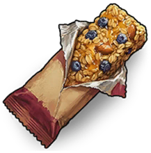

Medical
Items · MedicalGranola Bar

Granola Bar / MedicalEffects
Food +10–15Health regeneration for 3sUse interval: 3sHow to obtain
How to obtainLootObtained as loot
Item description
Old and sticky but still edible. Satisfies hunger and leaves your fingers sticky.